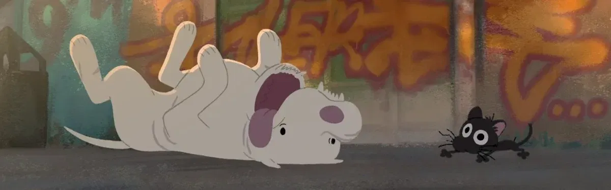
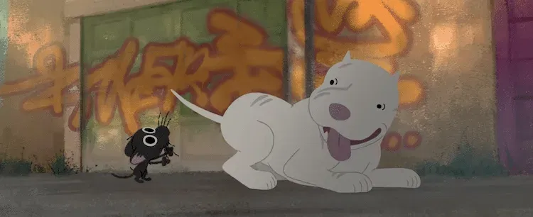

Как складывается дружба
Фильм не торопится. Сначала котёнок держится на расстоянии, потом любопытство побеждает страх, и всё решает игра: крышка от бутылки, прыжки, возня в пыли.


Пересказ сюжета по сценам (спойлеры)
- Мусорные бакиКотёнок живёт за зданием в Мишн-Дистрикте Сан-Франциско. Прохожая предлагает ему еду, но он убегает.
- Новый соседЗа домом появляется питбуль: его сажают на цепь у будки. Котёнок сначала смертельно его боится.
- КрышкаИгра с бутылочной крышкой впервые сближает их.
- Тяжёлая ночьПёс возвращается из драки сильно раненым, и его выбрасывают обратно на улицу.
- ШтормКотёнок запутывается в пластиковых кольцах. Пёс пытается помочь, но напуганный малыш царапает его.
- УтешениеОгорчённый пёс уходит в будку. Котёнок приходит к нему и остаётся рядом.
- ПобегНа следующий день они убегают со двора до того, как их заметит хозяин.
- Новый домЖенщина из первой сцены находит котёнка с псом, пугается, но видит, как они привязаны друг к другу, и вместе с мужем забирает обоих. Финал разворачивается на холме Бернал с видом на город.